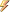

The following tables list the members exposed by the DienstZeitenCombo type.
| Name | Description | |
|---|---|---|
|  | AfterCloseUp | Fired after the dropdown list closes (inherited from UltraComboEditor). |
| AfterDropDown | Fired after the dropdown list is displayed (inherited from UltraComboEditor). | |
| AfterDropDownResize | Fires before resize of DropDown begins. (inherited from UltraComboEditor). | |
| AfterEditorButtonCheckStateChanged | Invoked after the CheckState of a StateEditorButton has been changed. (inherited from EditorButtonControlBase). | |
| AfterEditorButtonCloseUp | Invoked when a dropdown editor button has closed. (inherited from EditorButtonControlBase). | |
| AfterEnterEditMode | Fired after the control enters edit mode (inherited from TextEditorControlBase). | |
| AfterExitEditMode | Fired after the control exits edit mode (inherited from TextEditorControlBase). | |
| AutoSizeChanged | This event is not relevant for this class. (inherited from Control). | |
| BackColorChanged | Occurs when the value of the BackColor property changes. (inherited from Control). | |
| BackgroundImageChanged | Occurs when the value of the BackgroundImage property changes. (inherited from Control). | |
| BackgroundImageLayoutChanged | Occurs when the BackgroundImageLayout property changes. (inherited from Control). | |
| BeforeDropDown | Fired before the dropdown list is displayed (inherited from UltraComboEditor). | |
| BeforeDropDownResizeStart | Fired before resize of DropDown begins. (inherited from UltraComboEditor). | |
| BeforeEditorButtonCheckStateChanged | Invoked before the CheckState of a StateEditorButton has been changed. (inherited from EditorButtonControlBase). | |
| BeforeEditorButtonDropDown | Invoked before a dropdown editor button has been displayed. (inherited from EditorButtonControlBase). | |
| BeforeEnterEditMode | Fired before the control enters edit mode. (inherited from TextEditorControlBase). | |
| BeforeExitEditMode | Fired before the control exits edit mode. (inherited from TextEditorControlBase). | |
| BindingContextChanged | Occurs when the value of the BindingContext property changes. (inherited from Control). | |
| CausesValidationChanged | Occurs when the value of the CausesValidation property changes. (inherited from Control). | |
| ChangeUICues | Occurs when the focus or keyboard user interface (UI) cues change. (inherited from Control). | |
| Click | Occurs when the control is clicked. (inherited from Control). | |
| ClientSizeChanged | Occurs when the value of the ClientSize property changes. (inherited from Control). | |
| ContextMenuChanged | Occurs when the value of the ContextMenu property changes. (inherited from Control). | |
| ContextMenuStripChanged | Occurs when the value of the ContextMenuStrip property changes. (inherited from Control). | |
| ControlAdded | Occurs when a new control is added to the ControlCollection. (inherited from Control). | |
| ControlRemoved | Occurs when a control is removed from the ControlCollection. (inherited from Control). | |
| CursorChanged | Occurs when the value of the Cursor property changes. (inherited from Control). | |
| Disposed | Occurs when the component is disposed by a call to the Dispose method. (inherited from Component). | |
| DockChanged | Occurs when the value of the Dock property changes. (inherited from Control). | |
| DoubleClick | Occurs when the control is double-clicked. (inherited from Control). | |
| DpiChangedAfterParent | Occurs when the DPI setting for a control is changed programmatically after the DPI of its parent control or form has changed. (inherited from Control). | |
| DpiChangedBeforeParent | Occurs when the DPI setting for a control is changed programmatically before a DPI change event for its parent control or form has occurred. (inherited from Control). | |
| DragDrop | Occurs when a drag-and-drop operation is completed. (inherited from Control). | |
| DragEnter | Occurs when an object is dragged into the control's bounds. (inherited from Control). | |
| DragLeave | Occurs when an object is dragged out of the control's bounds. (inherited from Control). | |
| DragOver | Occurs when an object is dragged over the control's bounds. (inherited from Control). | |
| EditorButtonClick | Invoked when an editor button is clicked (inherited from EditorButtonControlBase). | |
| EditorSpinButtonClick | Invoked when an spin editor button is clicked (inherited from EditorButtonControlBase). | |
| EnabledChanged | Occurs when the Enabled property value has changed. (inherited from Control). | |
| Enter | Occurs when the control is entered. (inherited from Control). | |
| FontChanged | Occurs when the Font property value changes. (inherited from Control). | |
| ForeColorChanged | Occurs when the ForeColor property value changes. (inherited from Control). | |
| GestureCompleted | Fired when the user completes a gesture that was performed via a touch input digitizer. (inherited from UltraControlBase). | |
| GestureQueryStatus | Fired when the user makes contact with a touch input digitizer. (inherited from UltraControlBase). | |
| GestureStarting | Fired when the user begins a touch input digitizer gesture. (inherited from UltraControlBase). | |
| GiveFeedback | Occurs during a drag operation. (inherited from Control). | |
| GotFocus | Occurs when the control receives focus. (inherited from Control). | |
| HandleCreated | Occurs when a handle is created for the control. (inherited from Control). | |
| HandleDestroyed | Occurs when the control's handle is in the process of being destroyed. (inherited from Control). | |
| HelpRequested | Occurs when the user requests help for a control. (inherited from Control). | |
| ImeModeChanged | Occurs when the ImeMode property has changed. (inherited from Control). | |
| InitializeDataItem | Fires when a ValueListItem is created to represent a value found in the data source. (inherited from UltraComboEditor). | |
| InitializeEditorButtonCheckState | Invoked when the check state of a state editor button for an element should be initialized. (inherited from EditorButtonControlBase). | |
| Invalidated | Occurs when a control's display requires redrawing. (inherited from Control). | |
| ItemNotInList | Fired before the Validating event of the control whenever the text value entered into the editor portion of the control is not a value in the control’s valuelist. (inherited from UltraComboEditor). | |
| KeyDown | Occurs when a key is pressed while the control has focus. (inherited from Control). | |
| KeyPress | Occurs when a character. space or backspace key is pressed while the control has focus. (inherited from Control). | |
| KeyUp | Occurs when a key is released while the control has focus. (inherited from Control). | |
| Layout | Occurs when a control should reposition its child controls. (inherited from Control). | |
| Leave | Occurs when the input focus leaves the control. (inherited from Control). | |
| LocationChanged | Occurs when the Location property value has changed. (inherited from Control). | |
| LostFocus | Occurs when the control loses focus. (inherited from Control). | |
| MarginChanged | Occurs when the control's margin changes. (inherited from Control). | |
| MouseCaptureChanged | Occurs when the control loses mouse capture. (inherited from Control). | |
| MouseClick | Occurs when the control is clicked by the mouse. (inherited from Control). | |
| MouseDoubleClick | Occurs when the control is double clicked by the mouse. (inherited from Control). | |
| MouseDown | Occurs when the mouse pointer is over the control and a mouse button is pressed. (inherited from Control). | |
| MouseEnter | Occurs when the mouse pointer enters the control. (inherited from Control). | |
| MouseEnterElement | Fired when the mouse enters a UIElement (inherited from UltraControlBase). | |
| MouseHover | Occurs when the mouse pointer rests on the control. (inherited from Control). | |
| MouseLeave | Occurs when the mouse pointer leaves the control. (inherited from Control). | |
| MouseLeaveElement | Fired when the mouse leaves a UIElement (inherited from UltraControlBase). | |
| MouseMove | Occurs when the mouse pointer is moved over the control. (inherited from Control). | |
| MouseUp | Occurs when the mouse pointer is over the control and a mouse button is released. (inherited from Control). | |
| MouseWheel | Occurs when the mouse wheel moves while the control has focus. (inherited from Control). | |
| Move | Occurs when the control is moved. (inherited from Control). | |
| PaddingChanged | Occurs when the control's padding changes. (inherited from Control). | |
| Paint | Occurs when the control is redrawn. (inherited from Control). | |
| PanGesture | Fired when the user performs a panning gesture via a touch input digitizer. (inherited from UltraControlBase). | |
| ParentChanged | Occurs when the Parent property value changes. (inherited from Control). | |
| PressAndHoldGesture | Fired when the user performs a press and tap gesture via a touch input digitizer. (inherited from UltraControlBase). | |
| PressAndTapGesture | Fired when the user performs a press and tap gesture via a touch input digitizer. (inherited from UltraControlBase). | |
| PreviewKeyDown | Occurs before the KeyDown event when a key is pressed while focus is on this control. (inherited from Control). | |
| PropertyChanged | Fired after a property has changed (inherited from UltraControlBase). | |
| QueryAccessibilityHelp | Occurs when AccessibleObject is providing help to accessibility applications. (inherited from Control). | |
| QueryContinueDrag | Occurs during a drag-and-drop operation and enables the drag source to determine whether the drag-and-drop operation should be canceled. (inherited from Control). | |
| RegionChanged | Occurs when the value of the Region property changes. (inherited from Control). | |
| Resize | Occurs when the control is resized. (inherited from Control). | |
| RightToLeftChanged | Occurs when the RightToLeft property value changes. (inherited from Control). | |
| RotateGesture | Fired when the user performs a rotation gesture via a touch input digitizer. (inherited from UltraControlBase). | |
| SelectionChangeCommitted | Fired when a selection change is committed. (inherited from UltraComboEditor). | |
| SelectionChanged | Fired when the selection changes (inherited from UltraComboEditor). | |
| SizeChanged | Occurs when the Size property value changes. (inherited from Control). | |
| StyleChanged | Occurs when the control style changes. (inherited from Control). | |
| SystemColorsChanged | Occurs when the system colors change. (inherited from Control). | |
| TabIndexChanged | Occurs when the TabIndex property value changes. (inherited from Control). | |
| TabStopChanged | Occurs when the TabStop property value changes. (inherited from Control). | |
| TextChanged | Occurs when the Text property value changes. (inherited from Control). | |
| TwoFingerTapGesture | Fired when the user performs a two-finger tap gesture via a touch input digitizer. (inherited from UltraControlBase). | |
| Validated | Occurs when the control is finished validating. (inherited from Control). | |
| Validating | Occurs when the control is validating. (inherited from Control). | |
| ValueChanged | Fired when the control's text has changed. (inherited from TextEditorControlBase). | |
| VisibleChanged | Occurs when the Visible property value changes. (inherited from Control). | |
| ZoomGesture | Fired when the user performs a zoom gesture via a touch input digitizer. (inherited from UltraControlBase). |